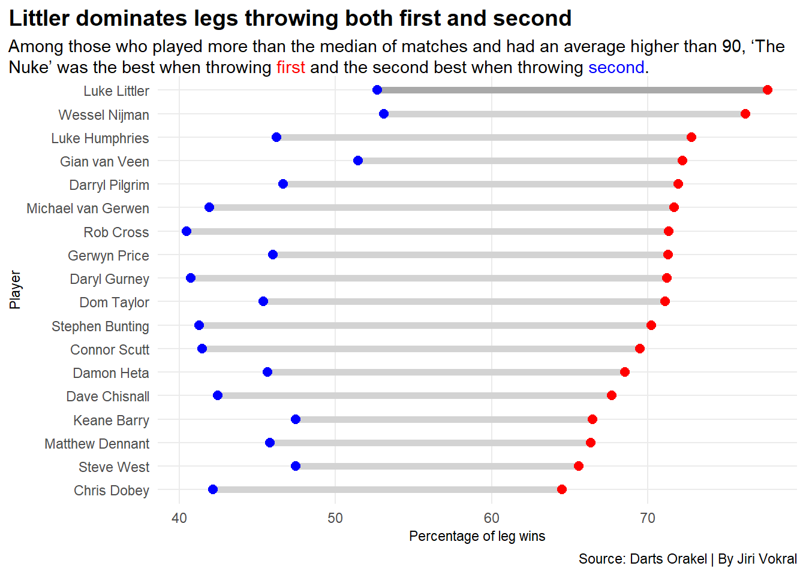
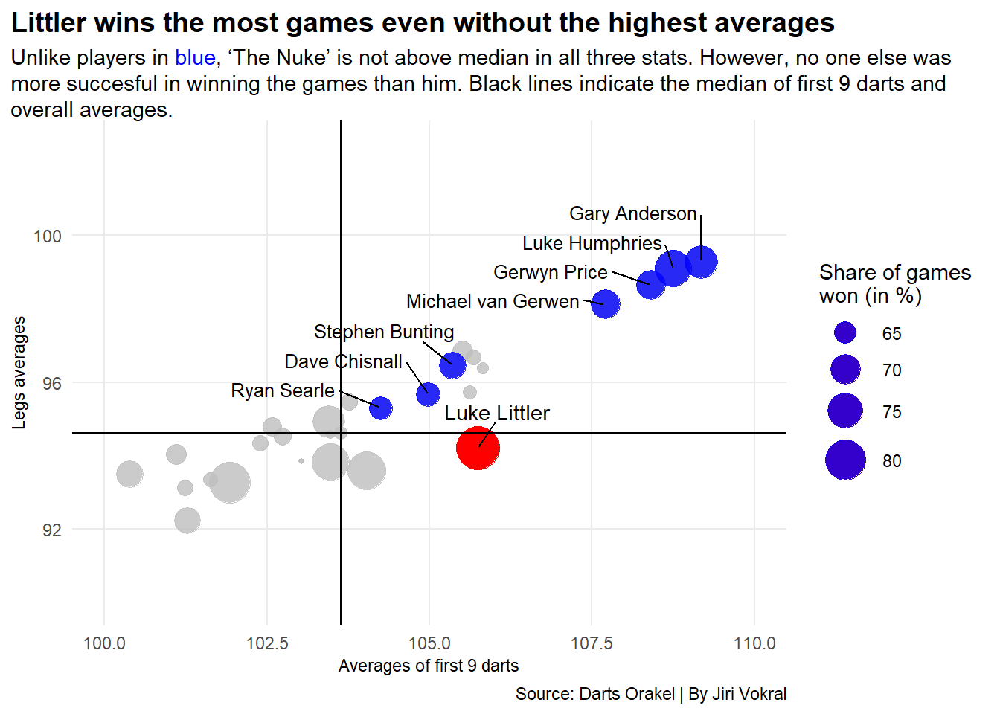
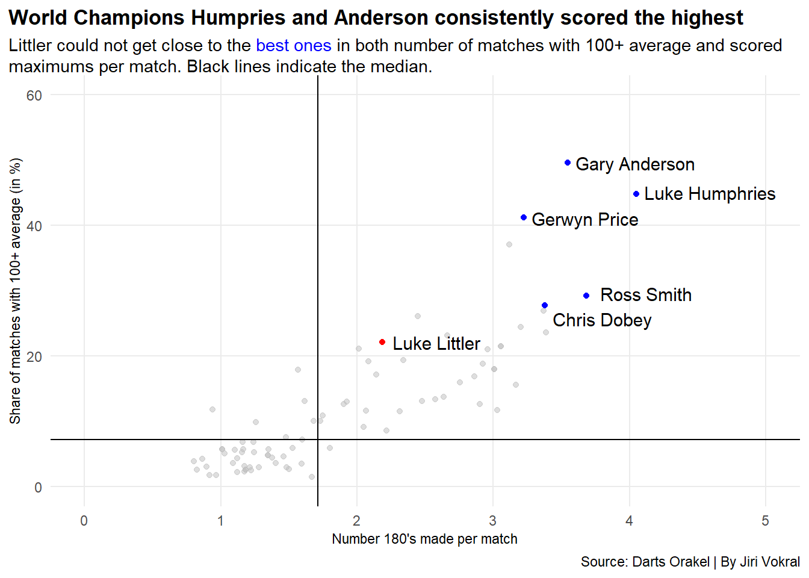

“Triple twenty will leave him double ten. And he finishes it on double ten! Luke Littler by name, but right now arguably the biggest name in the world of darts. Littler takes the giant step into the World Championship final. He made it nineteen days shy of his 17th birthday, and tomorrow he could be the World Darts Champion!”
At the turn of last year and this year, the entire darts world learned to count on a new rising star. Luke Littler made it to the World Championship final at the age of 16. He had to go through all the rounds to reach the final as he was not seeded due to his position in the world rankings.
The youngster with “The Nuke” sent one opponent after another home. When he faced the legendary Raymond van Barneveld in the round of sixteen, the pundits didn’t give Littler much of a chance. But they were wrong. Littler defeated the former world number one and world champion 4:1.
Brendan Dolan could also only win one set against Littler in the quarterfinals. The 16-year-old sensation made it to the semi-finals of the world’s most prestigious darts tournament. The opponent? World No. 8 and former world champion Rob Cross. But even he couldn’t bring himself to send Littler home.
The Nuke” led 4-2 in the final. He became the darling of the fans, who chanted, “You’ve got school in the morning, school in the morning!”
But in the end, Luke Humpries turned the dramatic finale around and became the world champion and world No.1. But Littler’s performance earned him an invitation to Premier League Darts, a select company of the best darts players who would meet in fifteen tournaments throughout the spring.
In eleven tournaments so far, he has reached the finals three times and won twice. As a result, Littler currently leads the overall standings in the highly prestigious Premier League.
Is The Nuke the best player in the world right now?
“No. No way,” Littler said when journalists asked him that question earlier this year. “You still got Luke Humphries in there, you still got Michael van Gerwen in there. I’m one of the best right now in terms of performance, but I’m not the best in the world,” he added.
Let’s take a look at the data from the end of March 2023 to the end of March 2024.
new_top<- logs2 |>filter( Played >=126& AVG >90& Pct_Legs_Won_Throwing_first >60& Pct_Legs_Won_Throwing_second >40 ) littler <- new_top |>filter( Player =="Luke Littler" )ggplot() +geom_dumbbell(data=new_top, aes(y=reorder(Player, Pct_Legs_Won_Throwing_first), x=Pct_Legs_Won_Throwing_second, xend= Pct_Legs_Won_Throwing_first),size =2,colour ="lightgrey",colour_x ="blue",colour_xend ="red") +geom_dumbbell(data=littler, aes(y=reorder(Player, Pct_Legs_Won_Throwing_first), x=Pct_Legs_Won_Throwing_second, xend= Pct_Legs_Won_Throwing_first),size =2,colour ="darkgrey",colour_x ="blue",colour_xend ="red") +theme_minimal() +labs(title="Littler dominates throwing both first and second", subtitle =" 'The Nuke' was the best when throwing <span style = 'color:red;'>first</span> and second best when throwing <span style = 'color:blue;'>second</span> among the ones who played more than median of matches and had average higher than 90.", y="Player", x ="Percentage of leg wins", caption="Source: Darts Orakel | By Jiri Vokral" ) +theme(plot.title =element_text(size =14, face ="bold"),axis.title =element_text(size =11), plot.subtitle =element_textbox_simple(size=11), panel.grid.minor =element_blank(),plot.title.position ="plot" )

Out of the 112 best players in the world, Littler has the highest success rate in the legs where he throws first. He won more than 77 percent of those legs. That’s five percentage points more than world No. 1 Humrpies or six more than three-time world champion and world No. 2 Michael van Gerwen. On the occasions when he has gone to the dartboard second, his success rate has dropped to 52.67 percent. But that is the second-best result of all.
And that’s not all. Littler also had the highest winning percentage for the year. He played a total of 398 games (by far the most of all players, the second-highest result is 279), of which he won 333. This means that he won more than 83 percent of the time.
Call:
lm(formula = AVG ~ First_9_averages, data = bubble_top)
Residuals:
1 2 3 4
-0.055660 -0.047558 0.110683 -0.007465
Coefficients:
Estimate Std. Error t value Pr(>|t|)
(Intercept) 8.8578 9.4836 0.934 0.4489
First_9_averages 0.8287 0.0874 9.482 0.0109 *
---
Signif. codes: 0 '***' 0.001 '**' 0.01 '*' 0.05 '.' 0.1 ' ' 1
Residual standard error: 0.09398 on 2 degrees of freedom
Multiple R-squared: 0.9782, Adjusted R-squared: 0.9674
F-statistic: 89.91 on 1 and 2 DF, p-value: 0.01094
Code
ggplot() +geom_point(data=new_bubble, aes(x=First_9_averages, y=AVG, size= Win_Pct),color ="grey" ) +geom_point(data=luke_littler, aes(x=First_9_averages, y=AVG, size= Win_Pct),color ="red" ) +geom_point(data=bubble_top2, aes(x=First_9_averages, y=AVG, size= Win_Pct),color ="blue" ) +scale_x_continuous(limits =c(100,110)) +scale_y_continuous(limits =c(90,102.5)) +scale_size_continuous(range =c(1,10), name ="Percentage of wins") +geom_text_repel(data=luke_littler, aes(x=First_9_averages, y=AVG, label=Player), nudge_y =1, nudge_x = .3) +geom_text_repel(data=bubble_top2, aes(x=First_9_averages, y=AVG, label=Player), nudge_y = .72, nudge_x =-1.4, size=3.4) +theme_minimal() +labs(title="Littler wins the most games even without the highest averages", subtitle ="Unlike players in <span style = 'color:blue;'>blue</span>, 'The Nuke' is not above median in all three stats. However, no one else was more succesful in winning the games than him.",y="Legs averages", x ="Averages of first 9 darts", caption="Source: Darts Orakel | By Jiri Vokral" ) +theme(plot.title =element_text(size =14, face ="bold"),axis.title =element_text(size =11), plot.subtitle =element_textbox_simple(size=11), panel.grid.minor =element_blank(),plot.title.position ="plot" )

Yet Littler didn’t even need that kind of success rate in the first 9 darts or the overall average to win that many games. Unlike the players highlighted in blue in the graph, he did not rank above the median in all the stats examined.
As mentioned before, Littler made his presence felt at the PDC World Championships. Prior to this tournament, he had been hovering on the fringes of PDC and junior events. In November 2023, for example, he dominated the final of the 2023 PDC World Youth Championships and defeated Gian van Veen in the final 6:4 in sets.
Call:
lm(formula = Maxs_per_match ~ Hundreds_plus, data = scatter)
Residuals:
Min 1Q Median 3Q Max
-1.01633 -0.31411 -0.06754 0.39030 1.12891
Coefficients:
Estimate Std. Error t value Pr(>|t|)
(Intercept) 1.073204 0.076717 13.99 <2e-16 ***
Hundreds_plus 0.070348 0.004812 14.62 <2e-16 ***
---
Signif. codes: 0 '***' 0.001 '**' 0.01 '*' 0.05 '.' 0.1 ' ' 1
Residual standard error: 0.4475 on 80 degrees of freedom
Multiple R-squared: 0.7276, Adjusted R-squared: 0.7242
F-statistic: 213.7 on 1 and 80 DF, p-value: < 2.2e-16
Code
ggplot() +geom_point(data=scatter, aes(x=Maxs_per_match, y=Hundreds_plus), color="grey", alpha=.5) +geom_point(data=luke_littler_scatter, aes(x=Maxs_per_match, y=Hundreds_plus), color="red") +geom_point(data=scatter_top, aes(x=Maxs_per_match, y=Hundreds_plus), color="blue") +scale_x_continuous(limits =c(0,5)) +scale_y_continuous(limits =c(0,60)) +geom_vline(xintercept =1.714514) +geom_hline(yintercept =7.245) +geom_text_repel(data=luke_littler_scatter, aes(x=Maxs_per_match, y=Hundreds_plus, label=Player), nudge_x = .4, size=4 ) +geom_text_repel(data=scatter_top, aes(x=Maxs_per_match, y=Hundreds_plus, label=Player), nudge_x = .4, size=4) +theme_minimal() +labs(title="World Champion Humpries and legendary Anderson consistently scored the highest", subtitle ="Littler scored above median, but could not get close to the best ones in both number of matches with 100+ average and scored maximums. Black lines indicate the median.",y="Percentage of matches with 100+ average", x ="Number 180's made per match", caption="Source: Darts Orakel | By Jiri Vokral" ) +theme(plot.title =element_text(size =13, face ="bold"),axis.title =element_text(size =11), plot.subtitle =element_textbox_simple(size=11), panel.grid.minor =element_blank(),plot.title.position ="plot" )

Littler also had the most 180’s thrown (869), the maximum number of points a player can score for three thrown darts. But it should be remembered that “The Nuke” played the most games of any of the top 112 players in the world.
On a per-game basis, Littler “only” threw 2.18 maximums per game, which puts him in 29th place in this statistic. World No. 1 and Littler’s opponent in the final, Luke Humphries, managed to roll more than 4 per game.
Littler managed to average over 100 in 22 percent of his matches. Two-time world champion Anderson did it in 45.59 percent of his matches, and the oft-mentioned Humphries in almost 45 percent.
In both stats, Littler is above the median, but well behind the best players.
What still drags Littler down significantly, however, is his checkout success rate. Any player can close his leg by rolling the appropriate double. If a player has 40 left, he can close the leg with a double 20.
Code
bar <-read_csv("DartsFinalData2.csv")top_bar <- bar|>filter( Played >120& AVG >90.62& Checkout_Pct >36.3 )top_bar_filtered <- top_bar[-16,]ggplot() +geom_bar(data=top_bar_filtered, aes(x=reorder(Player, Checkout_Pct), weight=Checkout_Pct), fill="lightgrey") +geom_bar(data=luke_littler, aes(x=reorder(Player, Checkout_Pct), weight=Checkout_Pct), fill="red") +coord_flip() +theme_minimal() +labs(title="'The Nuke' falls behind the best ones in checkouts", subtitle ="Last doubles of the legs worked pretty well for Littler, but he is nowhere near top 10.",y="Checkout percentage", x ="", caption="Source: Darts Orakel | By Jiri Vokral" ) +theme(plot.title =element_text(size =13, face ="bold"),axis.title =element_text(size =11), plot.subtitle =element_textbox_simple(size=11), panel.grid.minor =element_blank(),plot.title.position ="plot" )
Among the top players who have played at least 120 games, Littler is ranked 15th in this stat. He couldn’t get his success rate over 40 percent.
His figure was significantly higher than, for example, world No. 4 Nathan Aspinall (37.66 percent), world No. 8 and former world champion Peter Wright (36.86 percent), or world No. 9 Dimitri Van den Bergh (34.91). However, he is well behind the world’s top players.
So, was Luke Littler the best darts player in the world last year? A little bit, yes, but more like no.
Some of his stats are literally staggering and unparalleled. In other stats he’s close to the best players in the world, but still behind them. The next 12 months, when he will have to compete with the best on a regular basis, will tell us more. Just what the 17-year-old Englishman is capable of, he is proving in this year’s Premier League Darts…